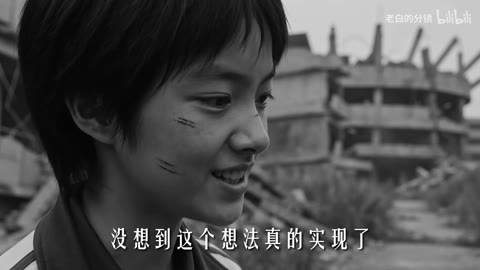

H25 / 151.2—153.133秒
电影混剪 | 愿你有一天终将与重要的人相遇
151.200秒一组接吻人物，151.467秒换第二组，152.400秒换第三组，153.133秒切到动画群像。前两次以相近动作和近景构图维持连续感，最后用不同材质画面形成段落变化。没有据此确认光流变形或无缝人物变身。
迁移提问：两个镜头为什么必须相邻？是共享意象、动作阶段、色彩，还是只是都很好看？
手法专题 / 规则、用途与取舍
利用相邻镜头改变理解，使原来无关的画面形成主题、对比或关系。
纪念、广告、人物关系重组、旅行随笔、社会观点、品牌回顾。
素材只因好看而排列；上下文失真；借剪接制造未经支持的事实判断。
①先写一句主题；②给每镜标情绪/动作/信息；③只选与主题有关的镜；④安排对照或递进；⑤删去不改变含义的重复镜。
重排与导出易；新含义、素材选择与语境判断难。
基础机制已做13项原创演示，不等于本页所有复杂组合均已成片验证。
原机制演示 →H25 / 151.2—153.133秒
151.200秒一组接吻人物，151.467秒换第二组，152.400秒换第三组，153.133秒切到动画群像。前两次以相近动作和近景构图维持连续感，最后用不同材质画面形成段落变化。没有据此确认光流变形或无缝人物变身。
迁移提问：两个镜头为什么必须相邻？是共享意象、动作阶段、色彩，还是只是都很好看？
H19 / 12—60秒
彩色姓名条、对白框和选择项；28秒主菜单鼠标与绿色按钮发光，29.53起人物介绍卡，54秒大字选项。
迁移提问：此刻观众必须读懂哪一条信息？如果所有界面都在动，谁仍然是主角？
H20 / 4—94秒
主要用动画全景、人物反应、表情特写串联；下方黑边有粉色描边字幕，有的字幕亮度渐变。
迁移提问：这一镜增加了什么新信息？删掉它，动机、情绪或因果会不会丢失？
H50 / 18—55秒
设备特写固定白标，之后早期人物、户外拍摄、器材与演播室片段，50秒底部带图标姓名条。
迁移提问：两个镜头为什么必须相邻？是共享意象、动作阶段、色彩，还是只是都很好看？

AI29 / 48—60秒
48秒楼道人物，54秒黑白人物与建筑，60秒转学校彩色画面。概览只证实状态，不确定所有入出转场。
迁移提问：这一镜增加了什么新信息？删掉它，动机、情绪或因果会不会丢失？
六镜排成“相遇”和“错过”两版，每版只改顺序与时长，不加新素材。
交付时保留基础版与加效果版，并写“增加了什么意义、损失了什么清晰度”。
使用观察与复盘表 →